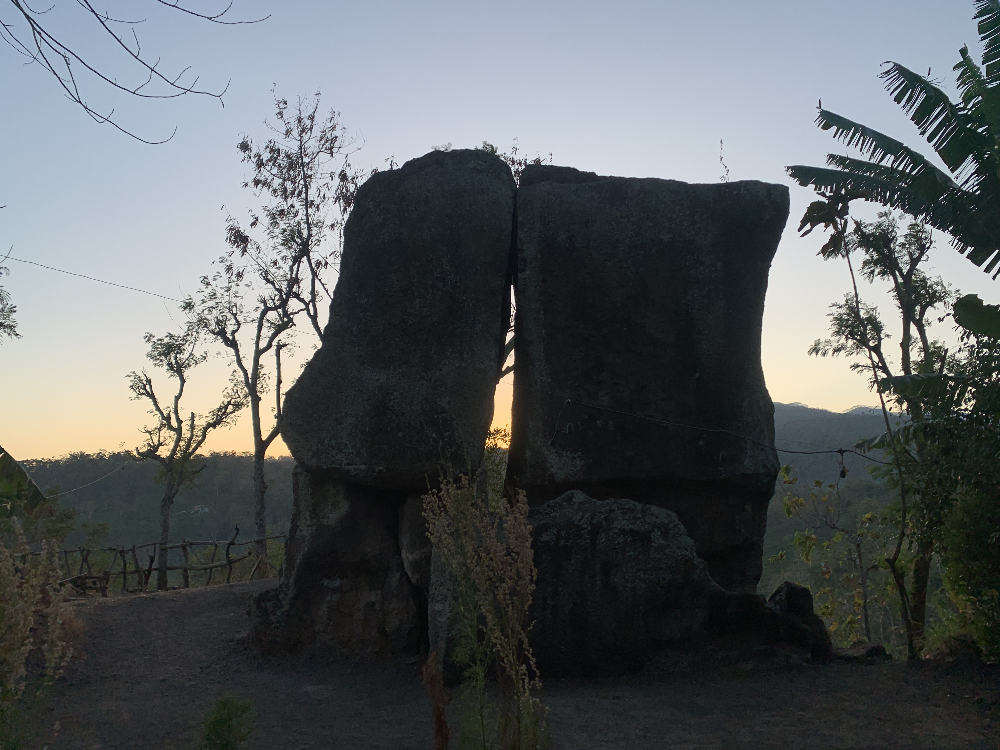

Desa Banyuputih merupakan salah satu desa di Kecamatan Wringin Kabupaten Bondowoso yang
memiliki batu menhir peninggalan zaman kuno Megalitikum.
Situs tersebut dikenal dengan nama “Betho Labheng”,
Nama tersebut berasal dari bahasa madura yaitu betho
artinya batu dan labheng artinya pintu disebut demikian
karena batu-batu tersebut tersusun menyerupai pintu dengan lubang
ditengahnya. Betho labeng ini berdiri tegak secara tunggal (monolit)
yang terdiri dari 3 batu besar dengan panjang +7,2 meter, lebar +5
meter dan tinggi + 7,5 meter. (Nur, 2022).
Kepala Desa Banyuputih
Ahmad Syahid, lahir pada 12 Juli 1985 di Bondowoso,
Beliau merupakan Kepala Desa Banyuputih sejak tahun 2021.
Dengan latar belakang pendidikan SD Nurul Islam, MTS Nurul Hidayah, MA Zainul Bahar. Beliau memiliki visi untuk mengubah desa menjadi "Banyuputih Glowing."
Konsep ini mengambil inspirasi dari air putih desa,
yang mencerminkan pandangan yang bersinar, cemerlang, dan disukai.
Beliau berharap desanya bebas dari istilah negatif seperti stunting,
rumah tak layak huni, dan pernikahan dini.
Beliau juga mendorong kesadaran akan pentingnya pendidikan,
infrastruktur yang baik, kebersihan lingkungan, dan rasa memiliki
yang kuat di antara warga dan kepala desa. Beliau percaya bahwa
dengan saling memiliki, gotong royong, dan semangat kerjasama, desa Banyuputih akan tumbuh menjadi lebih baik dan harmonis.
Visi Kepala Desa
MEWUJUDKAN DESA BANYUPUTIH YANG MANDIRI, SEJAHTERA, ADIL, JUJUR
DAN BERAKHLAK DENGAN MENGUTAMAKAN PELAYANAN PRIMA KEPADA MASYARAKAT
Misi Kepala Desa
Mewujudkan Peningkatan Perekonomian dan Kesejahteraan Masyarakat.
Meningkatkan Mutu Pelayanan Untuk Semua Kebutuhan Masyarakat.
Mengedepankan Kejujuran Serta Musyawarah Mufakat.
Meningkatkan Ketersediaan dan Kualitas Infrastuktur Pemerintah Desa.
Meningkatkan Kinerja dan Profesionalitas Perangkat Desa.
Wisata Alam
Betho Labheng adalah salah satu
destinasi wisata megalitikum terbesar yang terdapat di Bondowoso, Desa Banyuputih.

Wisata Budaya
Ketipung adalah salah satu kesenian khas jawa yang terdapat di Desa Banyuputih.